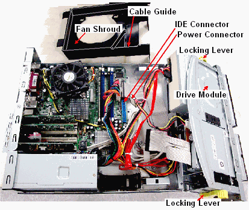
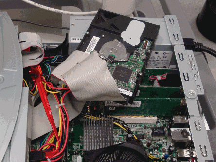
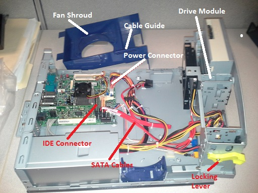

This procedure describes how to transfer files from the old Console PC hard drive to a replacement Console PC hard drive.
This procedure can only be used to transfer files from
- A Big PC Tower to a Small Form Factor PC.
- A Windows XP Console PC to another Windows XP Console PC.
Perform this procedure only when
- Replacing A Big PC Tower with a Small Form Factor PC without
- An immediate backup database.
- A USB backup drive.
- An uncorrupted database.
- Replacing a Windows XP Console PC with another Windows XP Console PC without
- An immediate backup database.
- A USB backup drive.
- An uncorrupted database.
- Replacing or swapping a corrupted Windows XP image hard drive with another Windows XP image hard drive without
- An immediate backup database.
- A USB backup drive.
- An uncorrupted database.
Note:
- The replacement hard drive can only be installed to the same type of Console PC. Examples: Silver Front to Silver Front, Black Front to Black Front.
- If the replacement hard drive is not from the same type of Console PC or it is blank, re-image the hard drive or Console PC is required. Refer to
Peripherals: Reimaging Console PC Hard Drive (DxI and Access2) procedure.
For DxI system, refer to the Peripherals: Replacing Console PC or PC Hard Drive procedure for more details.
For Access2 system, refer to the
Replacing PC or PC Hard Drive (Access 2) procedure for more details.
Caution: This procedure is not applicable for
- Windows 8 Mini Console PC.
- Instrument or AU hard drives.
- Windows XP Hard drives that failed with an
Insert boot disk error message.
-
Prepare to transfer the files from the old (failed) hard drive into the replacement PC hard drive.
Note: Select one of these options depending on the type of Console PCs:
Big PC Tower, Black Front Small Form Factor PC, or Silver Front Small Form Factor PC.
- Prepare the
Big PC Tower (Blue Dot, No Dot, Orange Dot) for file transfer.
- Shut down the PC, select
.
- Unplug the power cable from the PC and remove the PC side cover.
Note: If installing a new hard drive, install the new hard drive before transferring the files from the old hard drive.
- Remove the IDE ribbon cable from the connectors on the Tape drive and the CD-ROM drive.
Note: If the IDE ribbon cable connectors are not removed, the PC will not recognize the old drive and may post a
D:\ Drive Not Accessible error message.
- Connect the old hard drive to the CD-ROM drive IDE ribbon cable.
- Connect one of the spare hard drive power connectors to the old hard drive, and place the old hard drive in the PC so that the exposed components do not short out.
- Plug the power cable to the PC.
- Power on the PC and allow the PC to reboot to the
Windows desktop.
- Exit the user interface, if it launches.
-
Prepare the Black Front Small Form Factor PC for file transfer.
- Shut down the PC, select
.
- Unplug the power connector from the PC.
- Remove the four screws on the rear of the PC that retain the metal case cover. Slide the cover one inch to the rear, and then remove the cover upward.

- Remove the front face plate by pushing the two locking tabs on the top forward and then pivoting the plate forward and down.
- Move the two yellow locking levers forward to release the drive module.
- Move the drive module up and forward slightly to release the fan shroud.
- Unlatch the fan shroud cable guide and remove the fan shroud.
- Connect the IDE ribbon cable from the old hard drive to the blue IDE connector on the mother board. If the old hard drive is a SATA drive, then remove the SATA cable and power connector from the CD-ROM drive and connect them to the old hard drive.
Note: All the connectors are keyed for polarity.
- Connect the DC power connector to the old hard drive.
- Place the old hard drive on the PC so that the exposed components do not short out.

- Plug the power connector to the PC.
- Power on the PC, and then press the
[Delete] key while rebooting to enter the
CMOS Set-up window.
- Select
, and then press
[Enter].
- Use the
[+] and
[-] keys to move the internal drive to the top of the boot priority list. (The drive is likely identified as 250 or 500 on CH0.)
- Select
to save the changes, and then press
[Enter] to exit
CMOS Set-up.
Note: The hard drive names that are identified in the boot priority list can vary. If the PC does not boot to the internal drive on the first try, choose to move the other drive to the top of the boot priority list. If the internal hard drive does not have priority to boot before the old hard drive, the PC does not boot correctly.
- Prepare the Silver Front Small Form Factor PC for file transfer.
- Shut down the PC, select
.
- Unplug the power connector from the PC.
- Remove the four screws on the rear of the PC that retain the metal case cover. Slide the cover one inch to the rear, and then remove the cover upward.

- Remove the front face plate by pushing the two locking tabs on the top forward and then pivoting the plate forward and down.
- Move the two yellow locking levers forward to release the drive module.
- Move the drive module up and forward slightly to release the fan shroud.
- Unlatch the fan shroud cable guide and remove the fan shroud.
- Connect the IDE ribbon cable from the old hard drive to the IDE connector on the mother board. If the old hard drive is a SATA drive, then remove the SATA cable and power connector from the CD-ROM drive and connect them to the old hard drive.
Note: All the connectors are keyed for polarity.
- Connect the DC power connector to the old hard drive.
- Place the old hard drive on the PC so that the exposed components do not short out.
- Plug the power connector to the PC.
- Power on the PC, and then press the
[Delete] key while rebooting to enter the
CMOS Set-up window.
- Select
, and then press
[Enter].
- Select
1st Boot Device and then press
[Enter].
- Use the
Up and
Down arrow keys to select the internal drive to the top of the boot priority list and press
[Enter]. (The drive is likely identified as
SATA: PM-INTEL SSDS.)
- Select
to save the changes, and then press
[Enter] to exit
CMOS Set-up.
Note: The hard drive names that are identified in the boot priority list can vary. If the PC does not boot to the internal drive on the first try, choose to move the other drive to the top of the boot priority list. If the internal hard drive does not have priority to boot before the old hard drive, the PC does not boot correctly.
-
Transfer files from the old hard drive onto the new hard drive.
-
After the PC rebooting to Windows, open
Windows Explorer.
-
Navigate to
My Computer and check if the old hard drive is detected and shown as
D: Drive or
E: Drive or
F: Drive. (The drive is mostly likely identified as
Console_PC (D:) Local Disk.)
Note: If the old hard drive is not detected or shown in
My Computer, then
- Shut down the Console PC.
- Recheck or reseat the power connector and the IDE or SATA ribbon cable connected to the hard drive.
- Turn back on the Console PC.
-
Open the old hard drive (Console_PC (D:) Local Disk) and
copy the
NexGen or
NexStep folder.
-
Open
C: Drive and
paste the NexGen or Nexstep folder into the C: Drive.
This will move the database files from the old hard drive onto the new hard drive.
-
Re-name the
NexGen or NexStep folder in the C: Drive to
"NexGen-old or NexStep-old."
-
Exit Windows Explorer.
-
Shut down the PC, select
.
-
Unplug the power connector from the PC, remove the old hard drive, and reassemble the PC.
-
Plug the power connector to the PC, power on the PC, and allow Windows to launch.
-
Load system software and restore the database by manually replacing the database folders.
-
After software loading completed and PC rebooting, select
Cancel when the inserting APF message prompted.
-
Open
Windows Explorer.
-
Browse to
C:\NexGen-old\Console\ or C:\NexStep-old\PC and open
DRW folder.
-
Copy NexStepBase and EventBase folders in the DRW folder.
-
Browse to
C:\NexGen\Console\ or C:\NexStep\PC and open
DRW folder.
-
Paste NexStepBase and EventBase folders to replace the existed folders.
Note:
- If there is an error copying an objects file, then shut down the poet object server or fast object server and repeat this step. To shut down the poet object server or fast object server, select the Server icon to open it (located in the icon group on the bottom right corner of the display). Select
Shut Down.
- If the NexStepBase and Eventbase folders are corrupted, then browse to
C:\NexGen-old\Console\ or C:\NexStep-old\PC and open the
Backup folder. Open the
DRW folder in the Backup folder and copy
NexStepBase and
EventBase folders to replace the existed folders. If the database folders are also corrupted, then continue using other Backup folders (Backup1, 2, 3, 4, 5) until a good database is successfully restored.
-
Launch the user interface.
Note: The database on the old hard drive should be equivalent to an immediate backup. If the AU system status does not transition to
Ready or
Not Ready, then troubleshoot to clear jammed critical events. For DxI system, refer to the Software: Database - Clearing Jammed Critical Events procedure. For Access2 system, refer to the
Clearing Jammed Critical Events (Access 2) procedure.
-
Verify instrument operations.